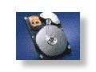

Current Projects
Past Projects
Advanced Vehicle Control Systems
Copier Paperpath Control
Disk Drive Control
Intelligent Machining
ILP Summary '96-'97
Disk Drive Control
 Overview
| Research Topics
| Related Publications
| Researchers
Overview
| Research Topics
| Related Publications
| Researchers

Bits of information are stored on and retrieved from computer disk drives using a magnetic read/write head. This information is arranged on concentric tracks, nominally circular in shape. Positioning the read/write head over the appropriate track is a control problem, which has a significant impact on the performance of the drive.
Servowriting is a manufacturing process where the data tracks and servo sectors are defined on the disk platters by creating the servo patterns so that the HDD servo system can later use them to identify the tracks and servo sectors, and to measure the relative position of the read head to the track centerline, i.e., the Position Error Signal (PES). The HDD servomechanism generates the position feedback signal by using the servo patterns as reference, which are written on the disks when no reference is present on the disks or inside the HDD. There are several conventional mechanisms used to provide the reference while the servo writing is performed. The common one is to externally write the position (servo burst) and timing (synchronization mark) information onto the disk surface by means of a costly laser-guided push-pin mechanism which can accurately move the HDD actuator arm so that the write head is positioned on the desired tracks.
Normal operation of a disk drive will require access to many different tracks. The faster the read/write head can be moved between tracks, the faster information can be stored or retrieved. There are economic and physical constraints on this task. The fast transition between data tracks is usually called "seeking."
The sensitivity of the position of the read/write head to external disturbances is also an important consideration in the design of controllers for disk drive servos. As computer disk drives become more mobile in laptop or handheld applications, new bumps and vibrations become common disturbances which must not affect the positioning control of the read/write head. Maintaining the read/write head over a particular data track is usually called "following."
The designed controller needs to address the concerns of servo writing, seeking and following for the final disk drive performance to be both fast and reliable. Work in this lab deals with the analysis of and design of controllers for disk drives.

Adaptive Compensation for Narrow-Band Disturbances
One of the most important issues in the track following control of hard disk drives (HDDs) is to keep the track mis-registration (TMR) small. TMR is defined as three times the standard deviation of the position error signal (PES) that is proportional to the radial distance between the position of the read/write head and the reference track center. Narrow-band disturbances, which show up as spikes in the PES spectrum, contribute a lot to the TMR. The sources of the narrow-band disturbances in HDD include track eccentricity (or repeatable runout), disk modes, and external vibration.
Since the frequencies of the narrow-band disturbances are often unknown, adaptive control is required for effective rejection of the disturbances. We have developed both indirect and direct adaptive control schemes to compensate for a single narrow-band disturbance to improve the TMR for higher TPI.
The indirect adaptive control is a two-step approach. At step one, the disturbance frequency is identified on-line within a short time window. The method we use to perform the frequency identification is the computational simple least mean squares (LMS) algorithm, which requires only three multiplications and three additions per sample. At step two, with the identified disturbance frequency, we use the basis function algorithm to adaptively identify magnitude and phase of the narrow-band disturbance and then reject it ([1]) or apply a disturbance observer (DOB) with a band-pass Q filter to cancel the disturbance ([2]).
Unlike the indirect adaptive control, the direct adaptive control does not involve identification of the disturbance model or the disturbance frequency. We modify the direct adaptive controller based on the Youla-Kucera parameterization to avoid large transient oscillation and to limit the waterbed effect to a certain frequency range by adding a pre-specified term and by cascading the Q filter with a band-pass filter, respectively ([3]). The other direct adaptive approach we develop involves adapting a parameter of the DOB Q filter to minimize the TMR caused by the narrow-band disturbance ([4]).
Currently we are developing adaptive control schemes to reject multiple narrow-band components in the PES spectrum for high TMR improvement. We are also looking for adaptive approaches to compensating for time-varying resonant modes in HDDs.
Self Servowriting
The conventional servo writing methods have some disadvantages. They need expensive external devices for positioning of the write head to write the servo patterns and require clean room environment not to contaminate the disk drive interior. Furthermore, frequent calibrations may be required. They face increasingly difficult challenges as the move towards ever increasing Track Per Inch (TPI) continues in the industry. These challenges come from different factors. Firstly, conventional servo writing requires several revolutions of the spindle to create one servo track. Therefore, the total time required to servo write an HDD increases proportionately with increasing number of tracks per surface. Because of this decrease in the throughput of servo writing, more servo writers are required to meet the production target. This in turn, requires more floor space in clean room. Secondly, for drives of smaller form factors, the jigs and fixtures for servo writing become smaller. It is challenging to design the pushpin mechanism that is small and yet sufficiently stiff.
The demand for higher throughput without increasing the production cost and process time was primary motivation for developing an alternative method of writing servo patterns called Self ServoWriting (SSW) which can be performed in an area outside expensive clean room as this method does not require any opening on the HDD's enclosure. SSW has been attractive in HDD industries because it not only potentially saves in the cost and time of mass manufacturing, but also effectively maintains the servo writing quality. SSW regenerates timing (tangential) and position (radial) information from the previously written track using the existing GMR head of the HDD itself. Hence, the external servo writers are no longer needed and servo writing does not have to be processed in the clean-room environment.
The servo system in SSW involves two control loops: position control loop timing control loop. In the position control loop, a Voice Coil Motor (VCM) is controlled to maintain the heads over the target track centerline during the reading and writing operations. And in the timing control loop, a Phase Lock Loop (PLL) is generally used to generate the servo writing clock signal. Therefore, there are two critical control objectives in SSW process with desired accuracy:
- All the servo tracks must be perfectly concentric. If not so, the data tracks will be squeezed, resulting in loss of off-track read margin or AC track squeeze. In the position control loop,the position of the write head with respect to the track centerline is controlled by controlling the VCM. Any disturbance and eccentricity present during this process will appear as written-in Repeatable Run-Out (RRO) for the head positioning servomechanism of HDD. This written-in RRO increases TMR that must be compensated for by the servomechanism of an operational HDD. Naturally, the requirements on the accuracy in positioning the write head is more stringent in SSW than in HDD servo system.
- The servo sectors of any track must be written perfectly radially aligned (radially coherent) with those in the adjacent tracks. If not so, reading of servo data will be degraded or corrupted. In the SSW process, this is done by controlling a Phase Lock Loop (PLL) to generate the clock signal to write the timing marks in the servo patterns. The misalignment between the written timing marks and the desired timing marks can be measured by timing jitter. Excessive timing jitter causes distortion in read back signal and warping of the servo sectors.